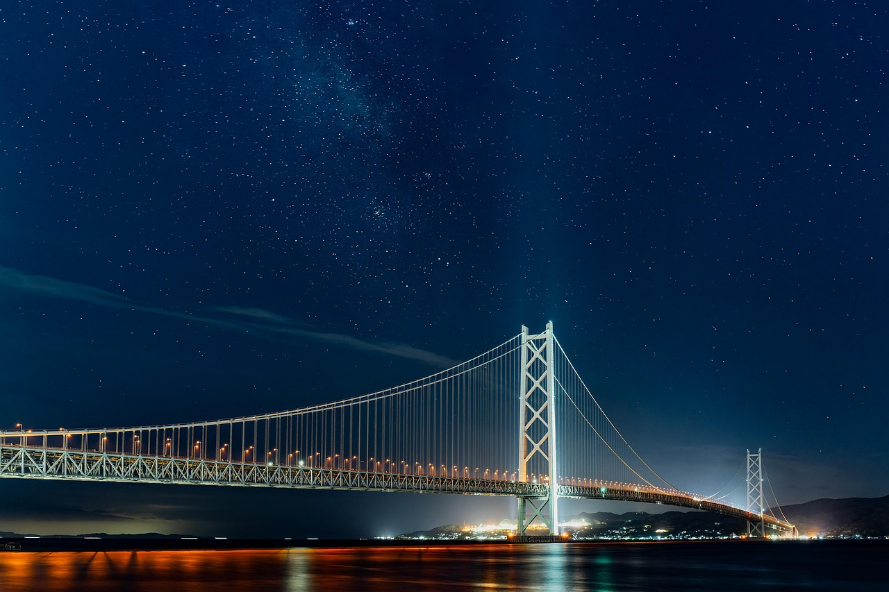

Paris

Known as the city of lights, Paris is famous for its romantic charm, historic landmarks, and vibrant culture.
From the iconic Eiffel Tower to the charming streets of Montmatre, every corner of Paris tells a story. Don't
miss the world class art at Louvre and the mouth-watering French pastries at local cafes.
Bali
 Bali, Indonesia's tropical paradise, offers stunning places, lush rice terraces and the spiritual temples. It's
a dream destination for relaxation, adventure and cultural exploration. Whether you are surfing, practicing
yoga, or exploring waterfalls, Bali is a place you will never forget.
Bali, Indonesia's tropical paradise, offers stunning places, lush rice terraces and the spiritual temples. It's
a dream destination for relaxation, adventure and cultural exploration. Whether you are surfing, practicing
yoga, or exploring waterfalls, Bali is a place you will never forget.
New York
Known as the city that never sleeps, New York offers skyscrapers, Broadway shows, and endless attractions. Walk
throught central parks and enjoy the skyline from the Empire State Building, and explore diverse neighbourhoods
filled with culture art and food.
Top Destinations
Paris, France
The city of lights — home to the Eiffel Tower, Louvre Museum, and charming streets filled with cafés
and art.
Tokyo, Japan
A blend of tradition and innovation — explore ancient temples, modern skyscrapers, and world-class
cuisine.
New York, USA
The city that never sleeps — from Times Square to Central Park, every corner tells a story.